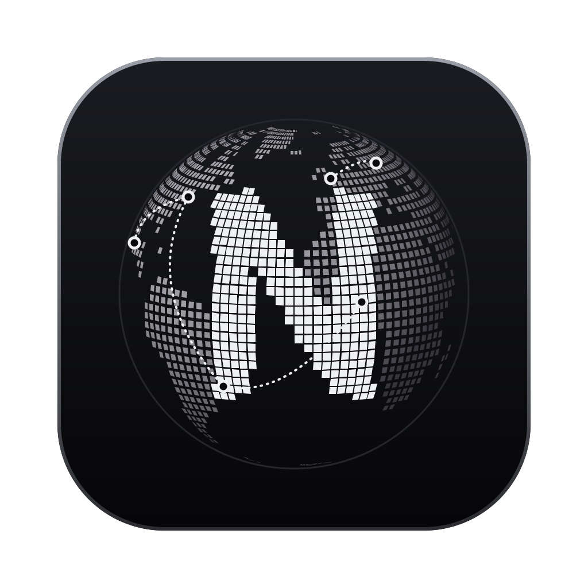
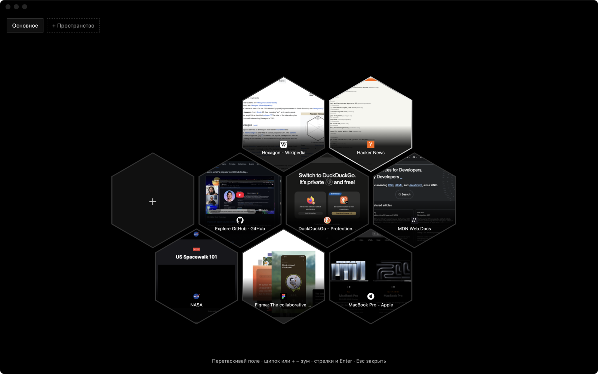

Ничего не собирает
Телеметрия, исследования и отчёты выключены и заблокированы. Их не включить обратно случайно.

NYX Browser GitHubДвижок Firefox, но без слежки, рекламы и мусора в интерфейсе. Вкладки в сотах, отдельные пространства и тема, которую можно перекрасить целиком.

Телеметрия, исследования и отчёты выключены и заблокированы. Их не включить обратно случайно.
uBlock Origin встроен и не отключается. DNS идёт по HTTPS через AdGuard и режет трекеры ещё до загрузки.
Все вкладки шестиугольниками на бесконечном поле. Перетаскивай, группируй, закрывай. Открываются по ⌥Tab, на Windows по Ctrl+Space.
Работа, учёба, личное: у каждого своя история, куки и вкладки. Ничего не пересекается.
Закрывает вкладки, которые ты давно не открывал, и предупреждает, когда их слишком много.
Любые цвета и иконки, вкладки сверху или слева. По умолчанию — жидкое серебро на чёрном.
.dmg по кнопке выше и открой его.
Убедиться, что файл настоящий: команда shasum -a 256 ~/Downloads/NYX-Browser-*.dmg
в Терминале должна вывести .exe по кнопке выше и запусти его.
Убедиться, что файл настоящий: команда
Get-FileHash $env:USERPROFILE\Downloads\NYX-Browser-Setup-*.exe
в PowerShell должна вывести Когда выйдет новая версия, NYX сам покажет об этом полоску сверху.